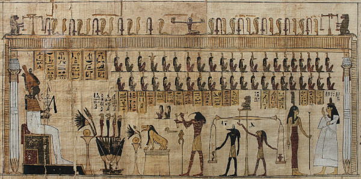

Fonte: Marcus Steinmeyer
Durante o mês de março realizamos uma atividade relacionada ao dia das mulheres criando um cartaz sobre uma artista brasileira.
Ao decorrer de toda a história, muitas mulheres artista foram invisibilizadas devido a vários fatores. Por isso, fizemos, em parceria com outras turmas, cartazes com o intuito de trazer visibilidade para a arte dessas mulheres.
Escolhemos falar sobre Anna Muylaert, uma diretora e cineasta brasileira conhecida por obras como “Que horas ela volta?” e “Castelo Rá- Tim-Bum, o Filme”.


Fontes: Luisa Blankenburg e Nicolas Teixeira
Após a impressão das fotos utilizadas e a montagem completa do cartaz, a produção final se encontra em seguida na 3° imagem.

Fonte: Rede Omnia

3° Imagem | A Produção
Foi realizado uma releitura de uma pintura/papiro egípcio na forma de uma fotografia. A pintura em questão se trata de uma cena do Livro dos Mortos do Antigo Egito.
Nos alocamos na sala Multiuso para fazer uma releitura da do papiro egípcio visto em sala de aula. A foto foi feita conjuntamente da turma informática 2024 do Câmpus Garopaba.


Fontes: Professora Andrea e Luisa Blankenburg
Após a junção das imagens fotografadas e a edição por parte da aluna Luisa Blankenburg, a produção final da releitura se encontra em seguida na 3° imagem.
Foi muito bom fazer na prática essas atividades, pois dessa forma fica bem mais fácil de lembrar os pontos principais de cada conteúdo. - Henrique
Realizar tais atividades concretamente contribuiu para meu aprendizado e assimilação do conteúdo. - Eduardo
As atividades exercidas nas aulas de artes trouxeram boa contextualização da história da arte juntamente com experiências dinâmicas. - Luisa
Graças a atividade proposta, pude compreender melhor as técnicas de arte utilizadas pelos povos precursores da modernidade. - Nicolas
As atividades práticas me auxiliaram a fixar o conteúdo dado em sala de aula e me fizeram refletir sobre o que é a arte e qual o seu papel na sociedade. - Augusto
As atividades práticas realizadas nas aulas de artes foram essenciais para aprofundar minha compreensão sobre a história da arte e suas diferentes expressões ao longo do tempo. - Adriano